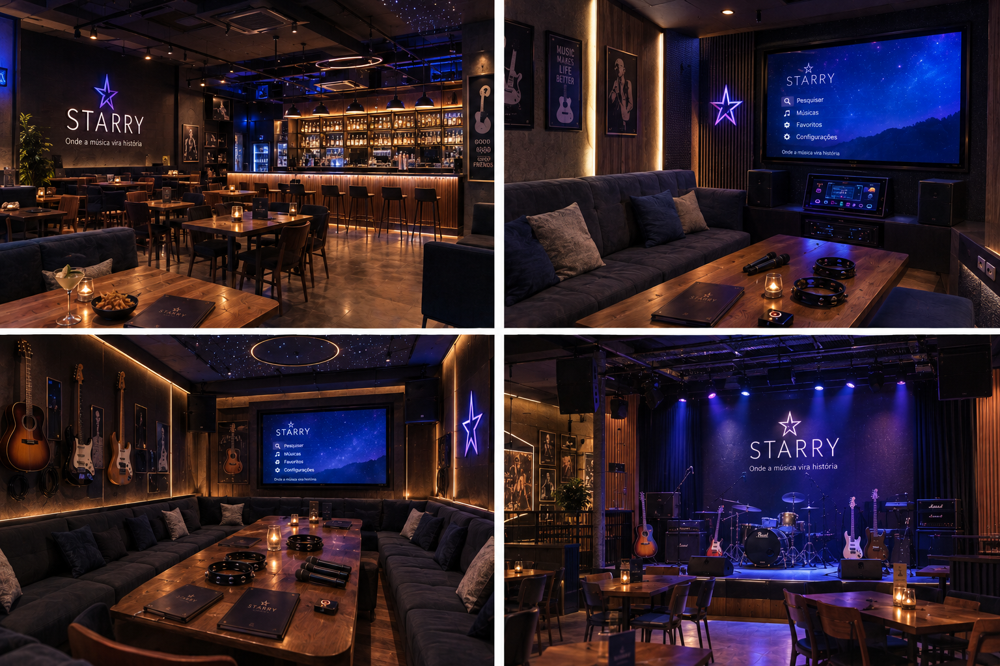

ONDE A MÚSICA
VIRA HISTÓRIA.
A STARRY NASCEU DO DESEJO DE CRIAR UM LUGAR ONDE AS PESSOAS PUDESSEM SIMPLESMENTE APROVEITAR O TEMPO COM QUEM AMAM, CRIANDO MOMENTOS INESQUECÍVEIS. AQUI, AMIGOS E FAMÍLIAS SE REÚNEM, CONVERSAM, CANTAM, COMEM E, PRINCIPALMENTE, SE DIVERTEM JUNTOS.

A Starry é uma empresa de entretenimento criada para transformar momentos comuns em experiências especiais. Há 3 anos, o espaço reúne música, diversão, comida e pessoas em um único lugar.
A ideia surgiu da vontade de criar um ambiente moderno e descontraído, onde cada pessoa pudesse escolher como aproveitar a noite: cantando no karaokê, acompanhando um show, curtindo com os amigos ou simplesmente aproveitando o espaço.
Criar experiências de entretenimento que aproximem as pessoas por meio da música, da diversão e da convivência, oferecendo um espaço acolhedor para diferentes públicos.
Karaokê e shows para quem gosta de cantar, tocar e aproveitar.
Um espaço pensado para reunir grupos e criar novas memórias.
Comidas e bebidas para acompanhar todos os momentos da noite.
Criar momentos leves, divertidos e inesquecíveis.
Aproximar pessoas por meio da música e da convivência.
Incentivar novas experiências e formas de aproveitar a música.
Fazer com que diferentes pessoas se sintam bem no espaço.
Na Starry, a música não é apenas uma atração. Ela faz parte de toda a experiência.
O público pode escolher entre cantar em uma sala de karaokê, assistir a artistas e bandas, experimentar o cardápio ou simplesmente aproveitar o ambiente com quem gosta.
AQUI, CADA NOITE PODE VIRAR UMA HISTÓRIA.STARRY